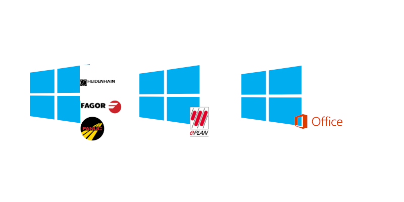
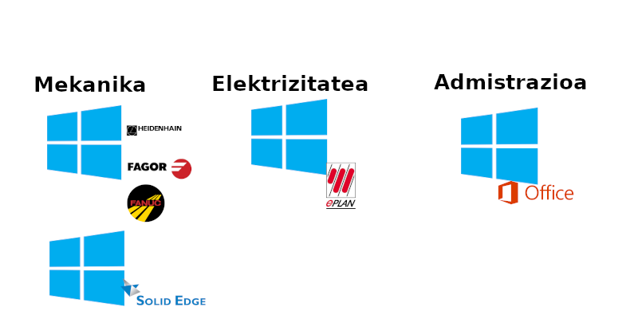

Zer da?
- Aurredefinitutako ezaugarriak dituzten ordenagailuak

- Arlo desberdinetako ikasle zein irakasleentzat

Abantailak
- Software instalaziorik ez
- Ordenagailu potenteterik ez da behar
- Lizentzia garestien etekina
- Software/segurtasun eguneraketak erreztu
- Aniztasunaren tratamendua
Desabantailak
- Zerbitzari potenteak behar dira
- Erabiltzaile konkurrente muga
- Sare konexioi egonkor eta nahikoa behar da
- Datu persistentzia
Erabilera
- Web bidez
- Bezero aplikazio bat erabiliz